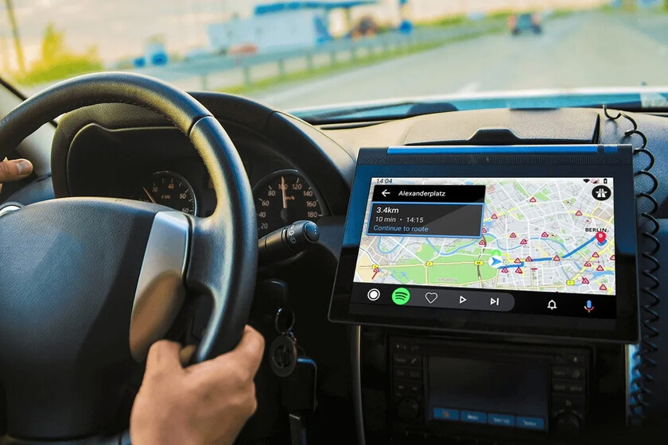

Se cuenta con una soga lisa resistente para realizar los volados
Al ser una soga lisa el agarre de esta se dificulta y por el peso de la carga llega a causar lesiones en las manos
Incorporación de nodos en la cuerda en la parte donde se ejerce la fuerza para jalar. Este nodo debe de tener una forma cónica para evitar que se atore con las diferentes superficies también se plantea la cuestión de hacerlo solido con materiales como plástico o bien algo más flexible como goma.

Al tener un punto de apoyo solido el acto de ejercer fuerza para jalar la carga se plantea será eficiente.
Explorar alternativas y equipamiento para facilitar la carga de mercancías tales como ganchos industriales, sistema de poleas etc.
Actualmente se le entrega la información de las entregas de mercancía en la aplicación simple root y en hojas de papel. A los choferes se les proporciona un celular por parte de Liverpool para que consulten la ruta de la entrega este teléfono lo llevan en la mano mientras conducen o bien con ligas lo colocan en algún lugar para visualizarlo mientras manejan.

En paquetería de acuerdo a comentarios la organización de la información se dificulta derivado de que a la misma persona se le entregan varios paquetes, pero cada paquete aparece en diferentes hojas y al ser impreciso simple root optan por utilizar Google maps marcando puntos y revisar las hojas. En el caso de big ticket se observa que al llevar el celular en la mano para consultar la ruta no se pueden colocar ambas manos en el volante.
Equipar a las unidades de una tableta en la cual puedan visualizar la ruta de simple root así como también desarrollar un sistema el cual contenga la información que se les da en las hojas dándoles opciones tales como ordenar las entregas de manera alfabética por nombre y marcar las entregas realizadas esta tableta debe estar instalada en un brazo firme que la asegure y le brinde autonomía.

El chofer tendrá una visualización precisa del camino además que podrá tener ambas manos libres, así como también se disminuye o elimina la necesidad de utilizar papel.
Dejar el teléfono que actualmente tienen los choferes en manos del copiloto para el proceso de avisar al cliente y también auxiliar al chofer a identificar la próxima entrega. Explorar con ellos las funcionalidades que les facilitaran la visualización de datos tales como las ya mencionadas ordenar por nombre y marcar entregadas.